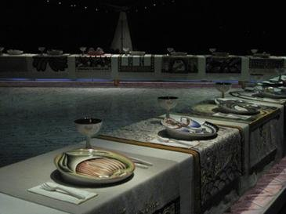

The Dinner Party
Judy Chicago · 1974–79 · Mixed media: painted china, ceramics, needlework, porcelain floor tiles · Triangular table, 14.63 m on each side · Brooklyn Museum, New York
In copyright. Look and learn: shown for study, not for download. · Photo: Arthistorygrrl, CC BY 3.0
The Dinner Party took six years and $250,000 to make, not counting unpaid labour. Judy Chicago worked on it alone for the first three years; in the next three, more than 400 people took part, most of them volunteers, among them ceramicists and needleworkers. The triangular table is 48 feet on each side, with 13 place settings on each side. The floor tiles carry the names of 998 more women and one man, the Greek sculptor Kresilas, included by mistake. It toured 16 venues in six countries and has been at the Brooklyn Museum since 2007.